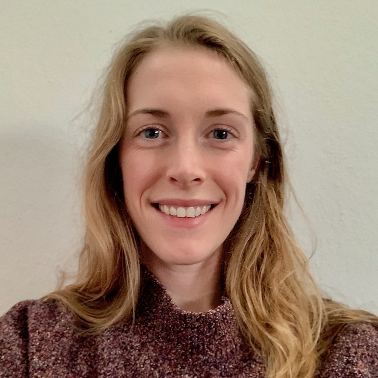

I’m Morgan, a second year systems biology / bioinformatics PhD student in the Forslund Lab at the Experimental and Clinical Research Center in Berlin, Germany.
My academic background consists of a BSc in Pharmaceutical Sciences from Purdue University (2015) and a MSc in Systems Biology from Heidelberg University (2018). Though my curiosity to learn the inner workings of the human body has had the strongest influence on my professional decisions, I have nurtured a joy for programming since I first took Java in high school. The past year that has manifest as a deepened interest in data science.
In the next two years I hope to (1) benchmark and advance the statistical methods being widely deployed in microbiome research in order to (2) determine more robust biomarkers of disease when exploring host-microbiome interactions from clinical collaborations. I plan to elaborate on this here for different audiences, but for now please check out the lab homepage to contextualize my work.
I built this site as a place to digest and document what I’m learning along the way, and as a resource for my colleagues. The name (“data and science”) expresses my fondness of semantics as well as my intent to explore not only technical topics like statistical analysis and programming in R (data), but also the resulting biological insight such analyses yield into the human microbiome (science). I feel these are slightly separate endeavors despite their dependence and overlap.
You can check out some of my code on GitHub, my publications on Google Scholar, or my photography on Cargo.
This website was created with the blogdown package in RStudio using the console theme.